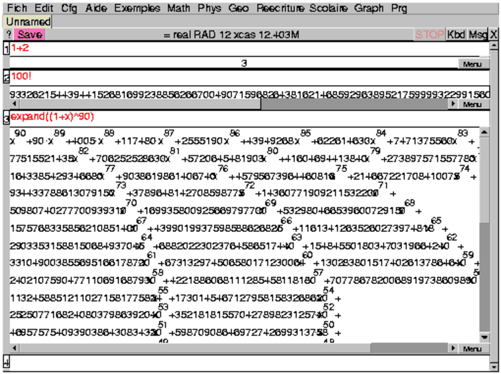

Retour à la page personnelle de Bernard Parisse.1 Pour commencer
1.1 Le principe
L’interface Xcas va vous permettre d’ouvrir plusieurs sessions de
calculs : chaque session utilise la même barre de menus (appelée dans la
suite "barre du menu général" : Fich, Edit, Cfg...), et chaque
session peut (ou non) être sauvée. Les noms des différentes sessions (ou
Unammed) s’inscrivent dans la ligne située sous cette
barre de menus et le nom de la session active est en surbrillance.
Ces sessions ont plusieurs niveaux
d’entrée, sont indépendantes les unes des autres
et on peut passer de l’une à l’autre en cliquant sur son nom.
Chaque session a une ligne de boutons qui lui est propre :
-
? pour ouvrir le sous menu Index
du menu Aide : si on tape le début d’une commande puis ?
dans une ligne de commandes cela ouvre le menu Aide à l’endroit
indiqué par ce début.
- Save pour sauver la session
- Config : exact real RAD 12 xcas 12.65M pour configurer la
session : c’est le bouton "ligne d’état" qui rappelle la configuration
choisie.
- STOP pour arrêter un calcul trop long il faut cliquer sur
STOP. Il faut
quelquefois taper à la fois sur SHIFT de votre clavier et cliquer sur
STOP pour que le calcul s’arrête.
Attention Si vous êtes en train de faire des calculs dans d’autres
sessions, STOP va arrêter tous ces calculs. Pour éviter
cela, vous pouvez faire Shift+STOP cela tuera seulement la
tache de la session visible ....mais cela est plus brutal et pour ne pas avoir
de problèmes ultérieurement, il faut ensuite tout sauver et relancer
Xcas.
Chaque session est composée de niveaux numérotés qui peuvent être de
différentes natures : ligne de commandes pour le calcul formel,
géométrie dynamique et formelle, tableur formel, dessin tortue etc...
Au sein d’une même session, les différents niveaux d’entrée ne sont pas
indépendants, par exemple, une variable définie dans une ligne de commandes
pourra être utilisée en géométrie ou dans le tableur.
L’ensemble de toutes ces sessions constitue votre espace de travail.
1.2 Le démarrage
Pour ouvrir un espace de travail, on clique sur l’icône xcasfr du
bureau sous Windows ou de Applications sur Mac OS X ou du menu Education
(Linux/Gnome) ou on tape dans un terminal sous Linux : xcas &
La première fois que vous lancez Xcas,
on vous demandera le premier niveau que vous voulez avoir au démarrage, à
choisir parmi :
Autres Xcas Maple
afin d’avoir toujours le même environnement à chaque démarrage.
-
Si vous tapez sur Enter ou sur Xcas c’est
la syntaxe Xcas qui sera sélectionnée.
- Si vous cliquez sur Maple c’est
la syntaxe Maple qui sera sélectionnée.
- Si vous cliquez sur Autres, vous devrez choisir
entre Geometrie, Tableur et Tortue.
Ainsi si vous cliquez sur Tortue,
un niveau de programme et un dessin Tortue
seront lancés au démarrage.
Ce choix n’influe que sur l’écran que l’on obtient au
démarrage car à tout moment vous pouvez créer un nouveau niveau
d’entrée de n’importe quelle nature et à n’importe quel endroit de votre
session ou encore ouvrir une nouvelle session. Vous pouvez changer
ultérieurement de mode de démarrage (menu Cfg puis
Configuration generale, on valide son choix, puis menu Cfg et
Sauver preferences) ou de syntaxe (bouton de configuration
Config:...).
Vous pouvez aussi relancer l’écran initial de configuration
en effaçant le fichier :
~/.xcasrc sous Linux ou xcas.rc sous Windows.
1.3 Un premier calcul
On suppose qu’au démarrage vous avez choisi Xcas ou que vous avez
créé une ligne de commandes en tapant Alt+n.
Si on veut utiliser une commande de Xcas, il suffit de la taper
dans une ligne de commandes puis de valider avec la touche Enter.
Attention!!!! Dans la suite Enter sera sous-entendu.
On tape par exemple :
1+2
On obtient :
-
en dessous la réponse 3 dans un éditeur déquations,
- la création d’un niveau de numéro 2.
On tape :
100!
On obtient :
-
la réponse dans un éditeur d’expressions possédant une barre de
scroll horizontale située sous la réponse qui permet de lire la valeur
exacte de 100!,
- la création d’un niveau de numéro 3.
On tape maintenant :
expand((1+x)^90)
On obtient :
-
la réponse dans un éditeur déquations possédant une barre de
scroll horizontale située sous le réponse et une barre de scroll
verticale située à droite de la réponse qui permet de lire le
résultat,
- la création d’un niveau de numéro 4,
- la création d’une barre de scroll verticale pour la session située
à droite de la barre de scroll verticale permettant de lire le
développement de (1+x)90.

Remarques :
-
Si vous avez choisi expand à partir du
menu Expression ▸Rationnel une aide succincte sur
expand s’affiche dans la ligne des messages (touche msg du clavier
obtenu avec le bouton Kbd), et si dans la configuration générale vous
avez coché Aide HTML auto une aide plus complète peut
s’afficher dans le navigateur (par défaut sous Linux c’est Mozilla et
par défaut sous Windows c’est le navigateur intégré).
Par contre, si vous avez cliqué sur expand dans le
bandeau (obtenu en cliquant sur cmds du clavierKbd), seule l’aide
succincte apparait.
Pour voir ce bandeau il faut avoir choisi
Cfg▸Montrer▸Bandeau,
ou en cliquant sur la touche cmds du clavier obtenu avec le bouton
Kbd. expand se trouve en cliquant sur Expression puis sur
Rationnel.
- Si le temps de calcul est supérieur à
0.1s, ce temps s’affiche en bleu dans la zone intermédiaire
reservée aux affichages de programmes.
1.4 Les niveaux
Les niveaux sont constitués :
-
soit une ligne de commandes : dans cette ligne on tape des commandes de
Xcas separées par ; ou par , et on les exécute en tapant
Enter. Il apparait alors un emplacement pour les affichages
intermédiaires (si il y en a)
et un emplacement pour la réponse qui peut être, selon la nature de la
commande, un éditeur d’expressions ou une fenêtre graphique.
Lorsqu’on met dans la même ligne de commandes, plusieurs commandes separées
par une virgule ou un point virgule, c’est la nature de la dernière commande
qui détermine la nature de la sortie. On peut par exempleécrire :
carre(0,1),0
pour ne pas avoir une sortie graphique mais pour avoir une sortie texte. La
réponse donnera alors la liste des coordonnées des sommets du carré.
On pourra remarquer que l’écran d’une sortie graphique est identique à une
figure de géométrie en mode Repère.
- soit un éditeur d’expressions ou d’expressions, qui permet de saisir
des expressions mathématiques en affichage 2-d c’est à dire sans
parenthèses (cf. la section 11),
- soit un niveau de géométrie 2-d, son écran, ses menus et boutons
et ses lignes de commandes,
- soit un niveau de géométrie 3-d, son écran, ses menus et boutons
et ses lignes de commandes,
- soit un niveau de dessin tortue (logo), son écran, son éditeur de
programmes, ses menus et boutons et ses lignes de commandes,
- soit un tableur, ses menus, ses boutons et son écran graphique 2-d,
- soit un éditeur de programmes, ses menus et boutons,
- soit un commentaire,
- soit un regroupement de ces niveaux en un groupe.
Le niveau actif est celui où se trouve le curseur et le niveau
sélectionné est obtenu quand on clique sur son numéro, numéro qui
s’écrit alors sur fond noir.
On peut effacer ou déplacer un niveau ou un groupe de niveaux
dans une session, ou encore le recopier dans une autre session.
On peut à tout moment insérer un nouveau niveau ou un groupe de niveaux
ou encore modifier l’entrée d’un niveau : Enter valide alors le
changement de commandes de ce niveau et positionne le curseur sur l’entrée
suivante, mais les niveaux suivants ne seront pas recalculés. Il est
toutefois possible après une modification de réexécuter, soit tous les
niveaux, soit les niveaux situés après la modification (menu Edit
puis Executer session ou Executer en_dessous).
Remarques
Dans une figure de géométrie, il est important de revalider les commandes,
après toutes modifications, dès le premier niveau modifié car dans une
figure de géométrie, la validation d’un niveau entraine la validation des
niveaux suivants sauf si on a cliqué sur Step.
Retour à la page personnelle de Bernard Parisse.